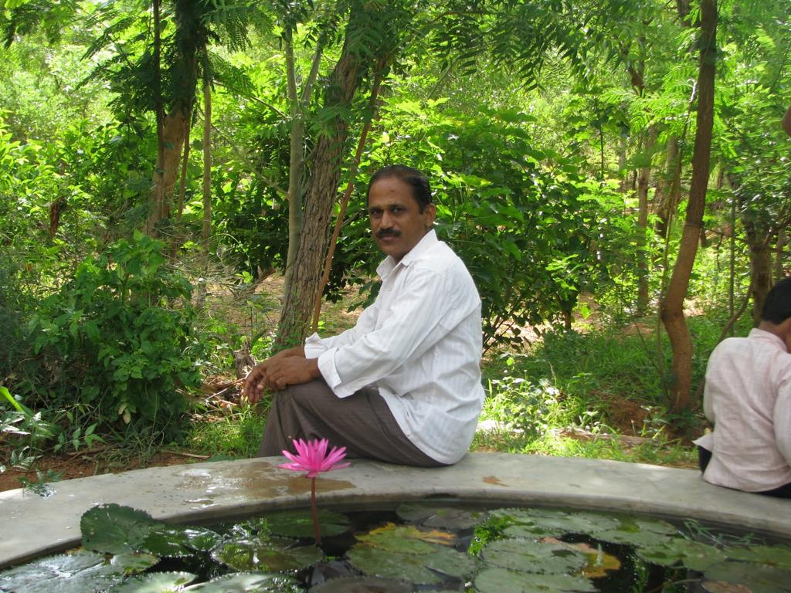

Subba
Anyone who has ever thought of doing something different, useful or personally fulfilling, knows how difficult it is to step out of the dominant thought patterns of self, family and the society around.
The first lesson I sought from Subba was how he was able to do it, with apparent ease.

Subba at Timbaktu 2007
At the time I met him in 2006, Subba was the head of Timbaktu School, living, learning and working with about 60 underprivileged children, living on a salary of not more than a few thousand rupees a month. While everyone called him ‘subba’ or ‘subbanna’, he was actually Dr. U. Subba Raju, alumnus of APRS Kodigenahalli, APRJC Nagarjuna Sagar, IIT Madras (B. Tech) and IIT Bombay (M. Tech and Ph.D.). I was curious as to how he was able to leave so many opportunities behind and come do the work he was doing.
What made me ask the question more insistently, was the fact that he came from a very poor background and was a family man – he had two girls.
Subba and Family 2015
Till that time, the ‘social entrepreneurs’ (how I hate the word!) I met were people who had secure backgrounds, who did not need to worry about their pasts or their children’s future; or were youngsters who hadn’t really started experiencing the repercussions of their youthful decisions. Here was a person who had grown up selling Idlis in Tirupati bus stand during the bad times the family experienced, who went on to acquire the most ‘secure’ credentials one could hope for in India, and then left everything behind and is sitting in this middle of nowhere school, teaching children from difficult backgrounds.
My question was as much personal and as it was professional. While I did not experience the kind of deprivation Subba did, and would not even be able to imagine it, I too grew up in difficult economic circumstances, living in a small-town slum as a child. I got a decent education thanks to Navodaya Vidyalayas and was at the brink of securing useful ‘credentials’ with my MBA at the IIM Bangalore. Even though I had not yet experienced corporate life, I was already thinking of stepping out, and I had a family and a child. To me, Subba was my personal beacon, and I wanted to understand how he did what he did. No question that what he was doing was noble, but I wanted to go beyond the usual explanations of noble thoughts being the drivers of noble deeds. I was looking for how to deal with the practical, while living the high-minded life.
I had two specific questions for him. One, how was he able to deal with the pressure of his obligations to his parents and siblings – both in the form of his own feeling of duty to them, and in the form of their expectations from him. Two, how is he able to deal with the idea of depriving his children from getting the benefit of the advantages he secured with his hard work. By this time, I felt I had known him enough to see that he did not need to deal with conflicts coming from his own self.
His answers were simple yet profound. He answered the second question first, and clearly, saying that all that his parents could give him was an opportunity to get a good education, and he has been able to make use of it. He felt that he was in a position to offer a similar advantage, that of a good education, to his children, and he believed that they will be able to do at least as well as he himself did. This answer made sense to me.
He answered the question about his biological family, saying that for quite some time, his family did not really figure how big a deal his education was, and by the time they got to understand, he was already well on his way out of that kind of life, and was able to step out of the expectations, obligations cycle. This answer was a little less satisfactory to me at that time. Years later, after he passed away, during a conversation with one of his family members, it struck me that his mother, who he cared about deeply, passed away in the year he graduated out of his Ph.D. Then, it kind of made sense.
Over the next four years, I completed my studies and started working, but kept in touch with Subba and Timbaktu. Every year, my wife Chithra, our son and I would visit Timbaktu, the same way we would visit our parents. We got to know Subba and his family, and his work, more and more. Both Chithra and I were interested in his thinking about alternatives to mainstream education. We would spend a lot of time discussing things, interacting with children, walking around, generally having a good time. The seeds of our thinking about education were sown then, and we nurtured it through our yearly visits.
All this while, we were thinking of doing something different, going off the usual path, but kept doing what we were doing. Our son was going to be 3, when we decided we will not send him to regular school. We were looking for options when we discovered that he was on the autism spectrum. We had always noticed he was different from other children, but it became clear that it was clinical and that he was suffering because of the limitations of being autistic.
It was a stressful time as we figured what autism was and what would be good for the child. It was clear that we needed to do something different. Both of us left our lives and relocated to Bangalore, to access therapies for the child. Everyone we knew, this included some of the brightest minds we have been fortunate to know, advised us against the move. The most important factor that drove us to do what we thought was right, was the fact that we knew Subba, we knew he did what he did and did it well. We knew the world out there was not as bad as everyone thought. We knew we would survive.
When we relocated to Bangalore, we had come closer to Subba. We kept meeting more frequently and he was a great source of strength while we made various decisions about our future as individuals and as a family. He was there to help us home-school the child, he was there thinking along with us as we set up Sambhavam, a therapy centre for autism. He was there observing the therapists do their work and would discuss behavior analysis with Chithra.
Subba, Venu and Chithra
He was there as we vaguely discussed the idea of Farm Hill, an alternative, neurodiverse learning space. He would happily contribute his dreams, and we planned we would do it together. All this, while he was dealing with his own life, his exit from Timbaktu, his wife’s illness, his children’s education, his work with a children’s magazine, and later as a wandering teacher working with various mainstream schools. We had the good fortune of spending a lot of time with him, and glad that we told him, in so many words, what difference he has made and continued to make, to our lives. He was there on our son’s birthday, with two bags full of fruits and vegetables from his garden. He was there, along with his family, at our home one day, as I left for Trichy. They travelled back home that night.
Then, the next day morning, he had a stroke and was on his way to Bangalore. I rushed back to Bangalore, just in time to receive him at the hospital. He held on to my hand as he was carried out of the vehicle, with a vague smile on his lips. A week later, he was no more.
It’s been three years and not a day passes by without us referring to or thinking of something that Subba used to say or do, as we continue to homeschool our child and work at Sambhavam and Farm Hill. We will soon have 200 trees here, as he dreamt of. Subba still is our personal beacon.
[](https://venugvgk.wordpress.com/2020/05/05/subba/img-20160815-wa0008/) [](https://venugvgk.wordpress.com/2020/05/05/subba/img-20160815-wa0010/) We had always heard of Subba’s friends – he kept in touch with people, he would enthusiastically tell stories of friends – but we did not really meet many of them, because we would all meet Subba individually when he was free, greedily looking for his time and attention. Once he passed away, we have met many of them, and we see that Subba impacted almost each of them, as profoundly as he impacted us. He was a part of many lives and he will continue to be a part of many lives, of friends, colleagues and students.